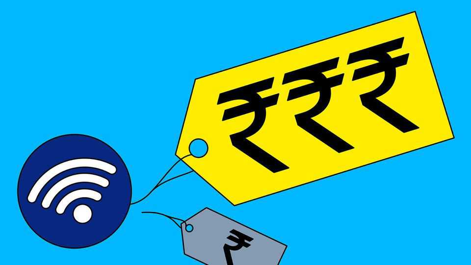

India’s ultra-cheap internet is about to get more expensive
Blame Jio, the country’s telecoms disrupter, going public

Oct 29th 2026
The impact of Jio, India’s biggest telecoms provider, can be seen everywhere in the country’s megacities. Delivery drivers scroll through short-form videos as they wait at red lights; shop assistants keep a family video chat running all day underneath the counter; security guards wile away the long, boring hours sharing memes and ogling foreign beauties. Jio’s super-cheap plans have allowed Indians to feast on all the internet has to offer.
Public investors can now buy a seat at the table. On October 28th Jio’s shares began trading on India’s two main bourses. The listing, which valued the company at 10.3trn rupees ($108bn), is the largest ever in local-currency terms (and the second-biggest in dollars). Jio’s shares closed 27% above their listing price at the end of the first day of trading.
The debut was a triumph for Mukesh Ambani, one of India’s richest magnates, who began building Jio in 2010 when few Indians could afford smartphones. Jio is one of the rare pieces of Reliance, Mr Ambani’s sprawling conglomerate, that he, rather than his father, can take credit for building. Reliance’s original telecoms arm, which Mr Ambani’s brother Anil inherited, went bust in 2019.
For internet-hooked Indians, however, the listing may not be such good news. Jio’s valuation suggests significant price rises may be coming. To maintain its revenue growth—around 15% in the latest financial year—it needs to either find more customers or make its service dearer. Market penetration is already high: India has 1.3bn wireless connections, 92 for every 100 people, rising to 147 connections per 100 people in cities. And thanks in part to Jio’s bargains, the telecoms industry has fallen from around a dozen companies in 2016 to just four today, two of which are vestigial. Jio enjoys a market share of 39%; its main rival, Bharti Airtel, controls 38%. (Vodafone Idea, which is heavily indebted, holds 15%, with state-run BSNL on 7%.)
That points to growth through higher prices. At present Jio earns an average revenue per user of around 214 rupees ($2.28) a month, for which subscribers get an average of 44 gigabytes (GB) of data. At 4.9 rupees per GB, Jio costs a third less than the industry average in India (and 2% of what American telecoms charge). Narrowing that gap would be the fastest route to more revenue. Motilal Oswal, a local broker, predicts a 15% increase in Jio’s prices by December. Airtel, which typically follows Jio with tariff rises of its own, has seen its share price jump by 11% in the past month in anticipation.
Might India’s data addicts revolt? After all, Jio’s rise was built on being startlingly cheap. When the firm first launched, users on its introductory offer enjoyed free high-speed data, helping it reach 100m subscribers in 170 days. Indians remain price sensitive: when the two big telecoms companies raised their fees in July 2024, Jio lost 16m subscribers in four months, with many switching to BSNL. But that did not last. Sluggish streaming speeds and patchy coverage on the former monopoly’s network brought many customers back.
Mr Ambani might also try to expand Jio’s other businesses, including its fixed-line offering and streaming service, which account for a fifth of its revenue. The tycoon has pledged to bring “affordable intelligence” to India, mirroring the cheap internet he brought a decade ago, and could peddle various AI services via Jio.
He is also plotting a satellite-internet offering similar to Elon Musk’s Starlink, the rollout of which has been held up by regulatory hurdles. (Mr Musk recently blamed “certain oligarchs” for the delays.) It would be an odd fit for Jio, which has benefited from India’s high population density: a 5G tower in one of the country’s packed cities covers tens of thousands of people, keeping down costs. Satellite internet is most appealing in areas that are remote and sparsely populated—which in India typically means poor. Jio had agreed to a distribution partnership with Starlink. Why, then, would it need its own satellites? Because one customer matters above all for Mr Ambani: a government that would rather not depend on Mr Musk. ■